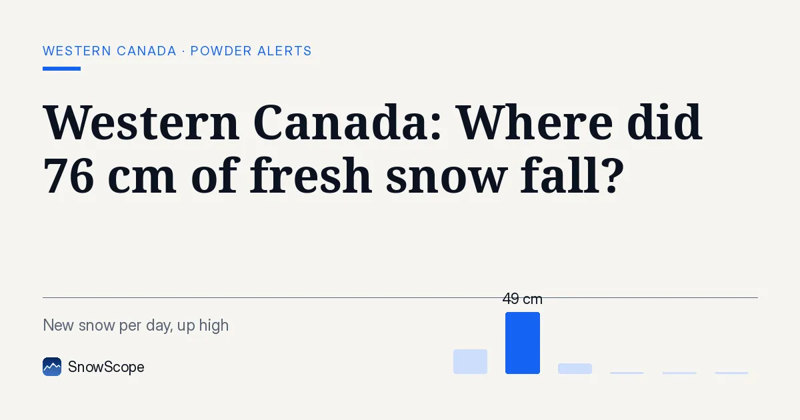

Snow reports · Western Canada
Western Canada: Where did fresh snow fall in Western Canada in the last 72 hours, and is more coming? Whistler Blackcomb received a significant 76 cm …
Western Canada: Where did 76 cm of fresh snow fall?

Where did fresh snow fall in Western Canada in the last 72 hours, and is more coming? Whistler Blackcomb received a significant 76 cm of new snow in the past three days, with Mount Cain Alpine Park also seeing 64 cm. However, our models show little new snow expected in the coming days for these areas.
Recent Snowfall Highlights
Over the past 72 hours, Whistler Blackcomb recorded 76 cm of fresh snow on its upper slopes. Mount Cain Alpine Park also had a good refresh with 64 cm of new snow. Mount Washington Alpine Resort and Revelstoke saw 17 cm and 19 cm respectively during the same period.
Our snow model, updated on November 16, 2026, shows that the snow-covered area across Western Canada has increased. The region now has 270,420 square kilometres covered in snow, up from 260,410 square kilometres two days ago. This means 43 out of 57 resorts in the region currently have snow.


Freezing level reaches 1,500 m at Banff Sunshine Village on November 19. Fresh snow fell across Western Canada in the last 72 hours, but rain threatens the new powder.

Western Canada forecast: 90 cm new snow at Mount Washington in the next two weeks, with 70 cm expected in late November and early December. Model run 2026-11-18.


Whistler Blackcomb for every level, with our snow history: about 370 cm at the usual peak at mid-mountain over 46 past winters, March and April the deepest months.

Skiing Lake Louise early in the season: why it starts early, what November and December snow usually looks like in 46 past winters, and how to ski thin early cover.

Ski Revelstoke's whole vertical in your head first: the snow at the summit, mid-mountain and the valley base in 46 past winters, and when each part is at its best.

Banff Sunshine Village month by month: about 100 cm at mid-mountain in a usual March over 46 past winters, April deepest near the top, and a season into late May.

Mount Washington holds 145 cm on 8 November, the deepest in Western Canada, but the freezing level will climb above the summit by 11 November.

Whistler Blackcomb received 100 cm of fresh snow in 72 hours to 8 November, but it fell unevenly: 96 cm at the summit, none at the base.


Ski Callaghan leads Western Canada forecast with 48 cm new snow through 7 November, mostly on 6th, with higher elevations capturing deeper accumulation.

Whistler Blackcomb forecast to gain 47 centimetres by Saturday as snow arrives Thursday through the region, according to our model run on 4 November.